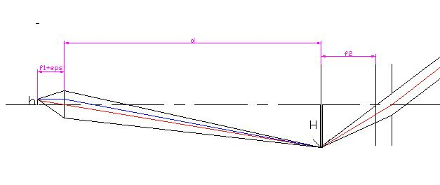
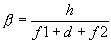
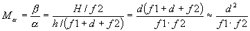
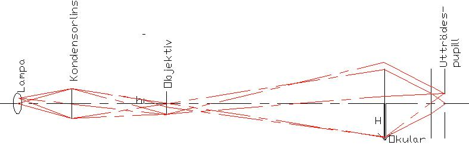

Mikroskopet
Mikroskopets uppgift är naturligtvis också att öka den synvinkel ett givet objekt upptar. Skillnaden gentemot telskopet är givetvis att objektet kanplaceras på det avstånd man vill och att objektet i sig är mycket litet. Vidare är objektet i allmännhet inte självlysande, varav följer att man behöver ett belysningssystem.
Vi börjar emellertid med det avbildande systemet, som består av
Ett objektiv som vi kommer att hantera som om det vore en tunn lins. Detta är naturligtvis långt från sanningen eftersom de normalt är ca 20-30mm långa och har fokallängder på några mm. För att förstå varför man behöver så många linser i objeketivet behöver man känna till aberrationer vilka behandlas i
kap 2 .Ett okular som alltid är flerlinsigt. Vi kommer att använda oss av Huygens okular från förra avsnittet.
Den bärande idén är att använda objektivet för att ge en reell mellanbild, förstorad några tiotal ggr som därefter används som objekt till okularet . Mellanbilden placeras i okularets främre fokalplan vilket ger en slutbild i oändligheten. Okularet används alltså som lupp.

Objektet placeras så att det ger en mellanbild i okularets främre fokalplan dvs i dess första lins. Avståndet från objektivet till denna, d, kallas mikroskopets tublängd och brukar vara runt 200mm. Förstoringen i objektivet blir alltså H/h=d/f1.
Denna mellanbild observeras nu igenom okularet dvs den vinkel slutbilden upptar är H/f2, vilket ska jämföras med den vinkel samma objekt, på samma ställe skulle upptagit om linserna inte suttit där. Denna är

Vinkelförstoringen blir alltså

Belysningsstrålgången ska sedan utformas så att ljuset leds in i mikroskopet på ett effektivt sätt, och sedan, med så små förluster som möjligt leds till utträdespupillen där observatören placerar sitt öga.

Kondensorlins och lampa väls så att lampan avbildas på objektivet. Bilden ska vara ungefär jämnstor med dettas inträdespupill. Eftersom utträdespupillen är en bild av inträdespupillen kommer därvid alla strålar som passerar in i objektivet att passera ut genom utträdespupillen.
Till
nästa kapitel (Begränsningar i optiska system)Till
innehållsförteckningen